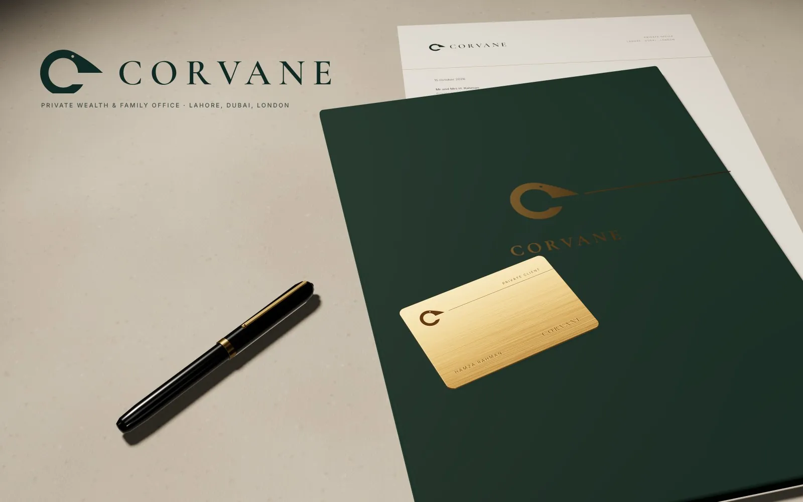

Corvane
A quiet-luxury identity for a private bank and family office, built on a raven drawn with a compass.
- Discipline
- Brand identity, private wealth
- Scope
- Brand strategy, Logo design, Visual identity system, Stationery, Card design, App UI direction, Brand guidelines
- Type
- Self-initiated concept project

Overview
Corvane is a self-initiated concept for a private wealth bank and family office in Lahore, Dubai and London. The project covers the whole identity, from the symbol and its geometry to stationery, a brass client card, a banking app and a brand standards book.
Challenge
Private banks tend to look either old and ornate or interchangeable with retail fintech. The goal was an identity as precise as Swiss engineering and as calm as an old banking hall, with a mark that still works at 16 pixels and in one colour.
Solution
The symbol is a single initial C that is also a raven in profile, built only from circles and horizontals, with its beak resting on a horizon line that runs through every application. Ledger green, ivory and brushed brass, Cormorant Garamond with Inter, and a measured tone of voice carry it from foil-stamped paper to the app.
Colour palette
- Ledger green#0F2A24
- Ivory#F1ECE2
- Stone#D8D0C1
- Ink#1C1C1C
- Brushed brass#B08D57
Typography
- Cormorant GaramondWordmark and headlines
- InterBody text and interface
Want something like this for your brand?
Start a project